Personalkostnad omfatter alle kostnader en bedrift har knyttet til sine ansatte. Dette inkluderer ikke bare grunnlønn, men også feriepenger, arbeidsgiveravgift som del av trygdeavgiften, pensjonskostnader, forsikringer og andre ytelser. Personalkostnad representerer ofte den største kostnadsposten for mange bedrifter og påvirker direkte lønnsomheten og kontantstrømmen.
I tillegg til disse kostnadene inngår egne poster under sosiale kostnader. Les mer i Sosiale kostnader.
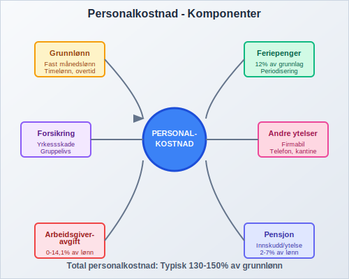
Komponenter i Personalkostnad
Personalkostnad består av flere ulike elementer som sammen utgjør den totale kostnaden ved å ha ansatte:
1. Lønnkostnader
Grunnlønn er den faste måneds- eller timelønn som utbetales til den ansatte. Dette danner grunnlaget for beregning av andre personalkostnader:
- Fast månedslønn: For heltidsansatte og ansatte i faste stillinger
- Timelønn: For deltidsansatte og vikarer
- Akkordlønn: Prestasjonsbasert lønn
- Provisjon: Salgsbasert lønn
- Overtidslønn: Tillegg for arbeid utover normalarbeidstime
2. Feriepenger og Feriedager
Feriepenger beregnes som 12% av grunnlaget for ansatte og må periodiseres korrekt:
- Opptjeningsår: Feriepenger opptjenes i ett år
- Utbetalingsår: Utbetales påfølgende år
- Avsetning: Må føres som kortsiktig gjeld i balansen
3. Arbeidsgiveravgift
Arbeidsgiveravgift beregnes av lønn og andre ytelser og varierer med bedriftens geografiske lokalisering:
- Sone I: 14,1% (Oslo og omegn)
- Sone II: 10,6% (andre byer)
- Sone III: 6,4% (distrikter)
- Sone IV og V: 5,1% og 0% (Nord-Norge og Finnmark)
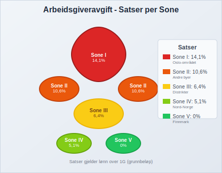
4. Pensjonskostnader
Pensjonskostnader er lovpålagte kostnader som varierer avhengig av tjenestepensjon:
- Innskuddspensjon: 2-7% av lønn mellom 1G og 12G
- Ytelsespensjon: Kostnad basert på aktuarberegninger
- AFP-ordninger: Tilleggspensjon for enkelte sektorer
5. Forsikringer og Trygder
Arbeidsgivere må dekke ulike forsikringskostnader:
- Yrkesskadeforsikring: Lovpålagt for alle ansatte
- Gruppelivsforsikring: Ofte inkludert i kollektivavtaler
- Behandlingsforsikring: Tilleggsforsikring for helsetjenester
- Reiseforsikring: For ansatte på tjenestereiser
6. Andre Personalytelser
Naturalytelser og andre fordeler som inngår i personalkostnaden:
- Firmabil: Verdi av fri bil til privat bruk
- Telefon: Fri mobiltelefon eller tilskudd
- Internett: Hjemmekontor tilrettelegging
- Kantineordninger: Subsidierte måltider
- Opplæring: Kurs og kompetanseutvikling
- Utlegg: Refusjon av utgifter ansatte legger ut på vegne av bedriften
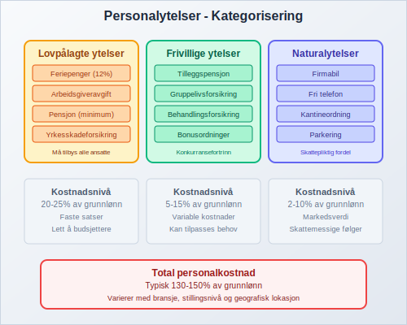
Regnskapsføring av Personalkostnad
Korrekt regnskapsføring av personalkostnad følger regnskapsprinsipper og krever systematisk behandling:
Månedlig Lønnskjøring
Ved hver lønnskjøring skal følgende poster bokføres:
| Beskrivelse | Debet | Kredit |
|---|---|---|
| Lønn | X | |
| Feriepenger (opptjent) | X | |
| Pensjonskostnad | X | |
| Arbeidsgiveravgift | X | |
| Skyldig lønn | X | |
| Skyldig feriepengeravsetning | X | |
| Skyldig pensjonspremie | X | |
| Skyldig arbeidsgiveravgift | X | |
| Skyldig skatt/folketrygd | X |
Periodisering og Avsetninger
Periodisering er kritisk for korrekt kostnadsføring:
- Opptjent ikke utbetalt lønn: Ved månedslutt
- Feriepengeravsetning: Løpende opptjening
- Bonusavsetninger: Estimerte bonusutbetalinger
- Overtidskompensasjon: Avvikende arbeidsperioder
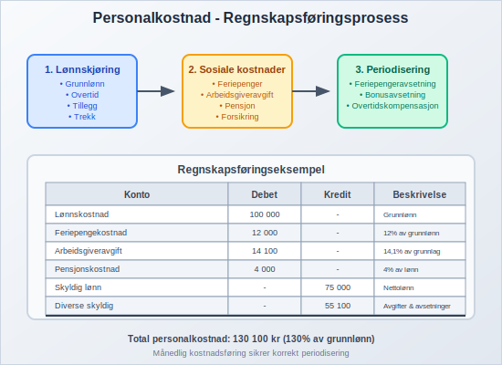
Skatterapportering
Personalkostnad må rapporteres korrekt til skattemyndighetene:
- A-melding: Månedlig rapportering av lønn og trekk
- Årsoppgave: Årlig sammendrag av utbetalinger
- Kontroll: Avstemming mot skattetrekk og avgifter
Personalkostnad i Ulike Bransjer
Personalkostnadenes andel av totale kostnader varierer betydelig mellom bransjer:
Tjenesteytende Sektorer
- Konsulentbransjen: 70-80% av omsetningen
- IT-tjenester: 60-75% av omsetningen
- Rådgivning: 65-80% av omsetningen
Handels- og Servicebedrifter
- Detaljhandel: 15-25% av omsetningen
- Restaurantbransjen: 25-35% av omsetningen
- Hotellbransjen: 30-40% av omsetningen
Industri og Produksjon
- Tradisjonell industri: 20-30% av omsetningen
- Høyteknologi: 40-60% av omsetningen
- Bygg og anlegg: 35-50% av omsetningen
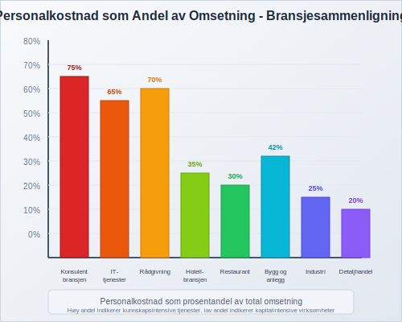
Analyse og Styring av Personalkostnad
Effektiv styring av personalkostnad krever kontinuerlig oppfølging og analyse:
Nøkkeltall for Personalkostnad
Produktivitetsmål:
- Omsetning per ansatt: Måler effektivitet
- Resultat per ansatt: Profitabilitet per arbeider
- Personalkostnad som andel av omsetning: Kostnadseffektivitet
Kvalitetsmål:
- Turnover rate: Andel ansatte som slutter
- Sykefravær: Prosentvis fravær grunnet sykdom
- Overtidsandel: Andel overtid av total arbeidstid
Benchmarking og Sammenligning
- Bransjesammenligning: Sammenligne med konkurrenter
- Historisk utvikling: Analyse av kostnadsutvikling
- Regionale forskjeller: Lønns- og kostnadsnivå per region
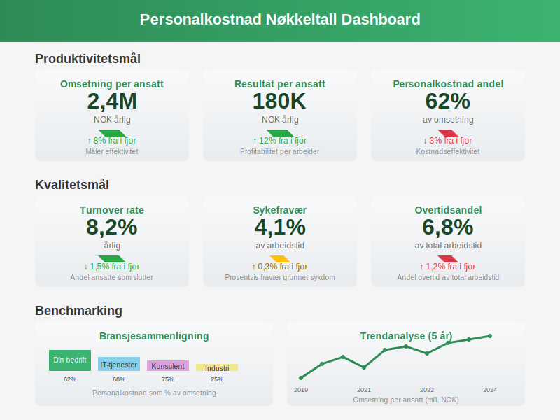
Budsjett og Prognose
Personalkostnadsbudsjett må inkludere:
- Lønnsøkning: Forventet lønnsvekst
- Nye ansettelser: Planlagte utvidelser
- Turnover: Forventet utskifting av personale
- Overtidskostnader: Sesongvariasjoner og prosjekter
Optimalisering av Personalkostnad
Bedrifter kan optimalisere personalkostnader gjennom ulike tiltak:
Teknologi og Automatisering
- Digital lønnssystem: Redusere administrative kostnader
- Selvbetjeningsportaler: La ansatte håndtere egne data
- Automatiserte prosesser: Redusere manuelt arbeid
Organisatoriske Tiltak
- Fleksible arbeidsordninger: Redusere kontorkostnader
- Kompetanseutvikling: Øke produktivitet
- Performance management: Målrettet belønning
Outsourcing og Alternative Løsninger
- Konsulenter: For spesialistoppgaver, inkludert tungt salær for særlig komplekse eller omfattende konsulentoppdrag
- Innleie: Fleksibilitet i kapasitet
- Automatisering: Erstatte rutinearbeid
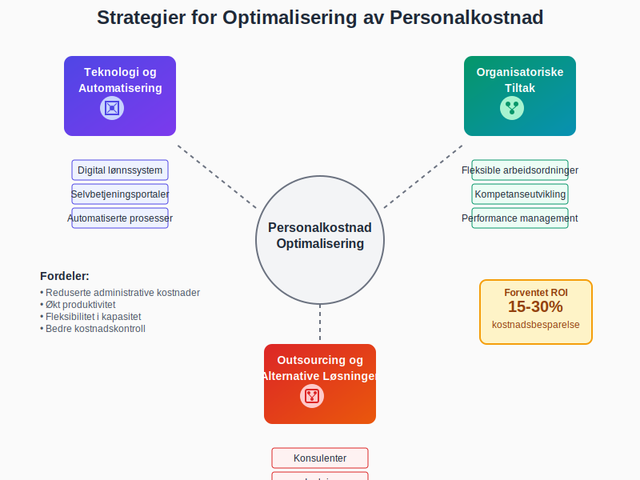
Juridiske Aspekter ved Personalkostnad
Personalkostnad er regulert av omfattende lovverk:
Arbeidsmiljøloven
- Arbeidstidens lengde: Maksimal arbeidsuke
- Overtidskompensasjon: Regler for overtidsbetaling
- Pauseregler: Hvileperioder og pauser
Ferieloven
- Feriedager: Rett til ferie og feriepenger
- Opptjeningsregler: Når rettigheter oppstår
- Utbetalingsregler: Tidspunkt for utbetaling
Skatteloven
- Trekkplikt: Arbeidsgivers ansvar for skattetrekk
- Naturalytelser: Skattlegging av fordeler
- Rapportering: Krav til dokumentasjon
Personalkostnad og Merverdifferansebestemmelse
Når mva skal beregnes, påvirker personalydeser behandlingen:
Fradragsføre Personalkostnader
- Ikke fradragsberettiget inngående mva: På personalrelaterte tjenester
- Blandet bruk: Ved personlig og bedriftsmessig bruk
- Dokumentasjon: Krav til bilagføring
Mva på Naturalytelser
- Firmabil: Mva-behandling av privatbruk
- Andre ytelser: Telefon, internett og liknende
- Verdsetting: Prinsipper for verdsetting av ytelser
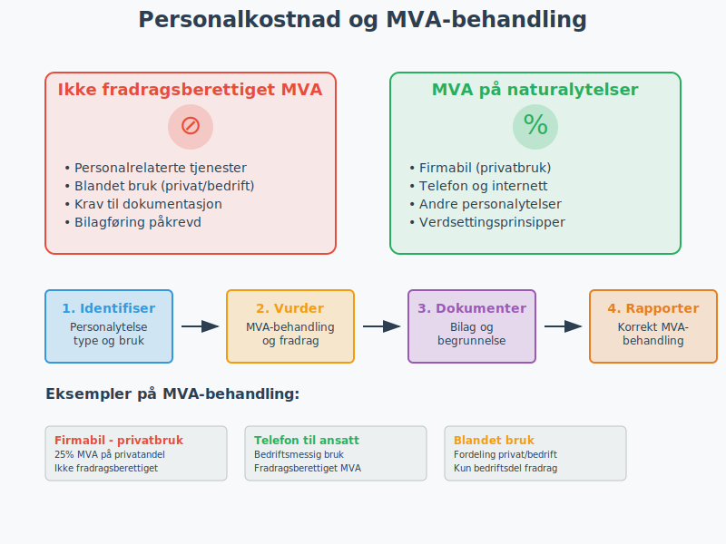
Internkontroll for Personalkostnad
Solid internkontroll er kritisk for personalkostnadsområdet:
Autorisasjon og Godkjenning
- Ansettelseskontrakter: Godkjenning av lønnsvilkår
- Lønnsendringer: Dokumentert godkjenning
- Overtid: Forhåndsgodkjenning av ekstraarbeid
Kontrollrutiner
- Månedlig avstemming: Lønnssystem mot hovedbok
- Feriepengeravsetning: Beregning og kontroll
- Personelliste: Oppdatering ved ansettelser/oppsigelser
Risikoområder
- Fiktive ansatte: Risiko for svindel
- Feil satser: Arbeidsgiveravgift og pensjon
- Periodiseringsfeil: Manglende avsetninger
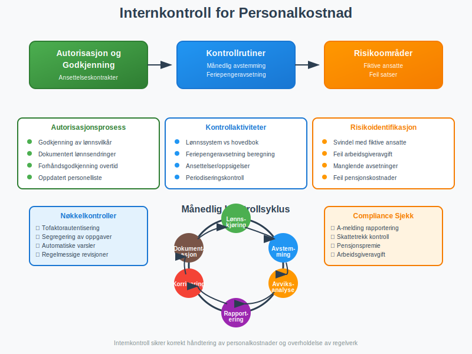
Rapportering og Analyse av Personalkostnad
Effektiv rapportering gir ledelsen beslutningsgrunnlag:
Månedlige Rapporter
- Lønnskostnadsrapport: Detaljert kostnadssammensetning
- Avviksanalyse: Sammenligning med budsjett
- Prognoseoppdate: Reviderte årsestimater
Kvartalsvise Analyser
- Produktivitetsanalyse: Omsetning per ansatt
- Kostnadseffektivitet: Benchmarking mot mål
- Trendanalyse: Utvikling over tid
Årsrapportering
- Personalkostnad i årsregnskap: Note om personalkostnader
- Nøkkeltallsanalyse: Sammenligning med tidligere år
- Prognose: Forventet utvikling neste år
Personalkostnad og Korona-Pandemien
COVID-19 pandemien påvirket personalkostnader betydelig:
Statlige Støtteordninger
- Kompensasjonsordning: Dekning av lønnskostnader ved nedstenging
- Permitteringsordninger: Reduserte kostnader ved permittering
- Lærlingtilskudd: Støtte til lærlinger
Endrete Kostnadsstrukturer
- Hjemmekontor: Reduserte kontorkostnader, økte IT-kostnader
- Digitalisering: Investering i teknologi og opplæring
- Helse og sikkerhet: Økte kostnader til smittevern
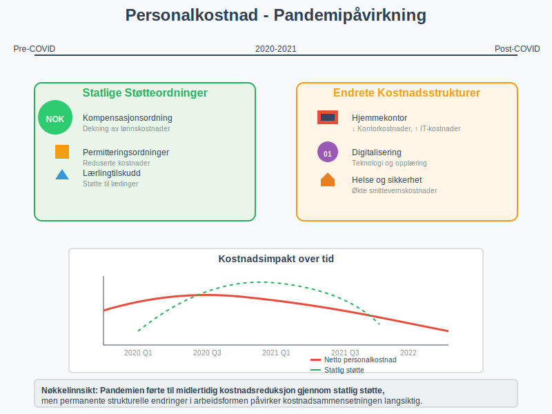
Fremtidens Personalkostnad
Flere trender vil påvirke fremtidens personalkostnader:
Teknologisk Utvikling
- Kunstig intelligens: Automatisering av HR-prosesser
- Digital HR: Selvbetjeningsløsninger for ansatte
- Dataanalyse: Prediktiv analyse av personalkostnader
Arbeidsliv i Endring
- Fleksibelt arbeid: Hybride arbeidsmodeller
- Kompetanseskiftet: Økt behov for digital kompetanse
- Generasjonsskiftet: Ulike forventninger til arbeidsvilkår
Regulatoriske Endringer
- EU-direktiver: Nye regler for arbeidsrettigheter
- Skatteendringer: Potensielle endringer i arbeidsgiveroppgaver
- Miljøhensyn: Grønne arbeidsplasser og bærekraft
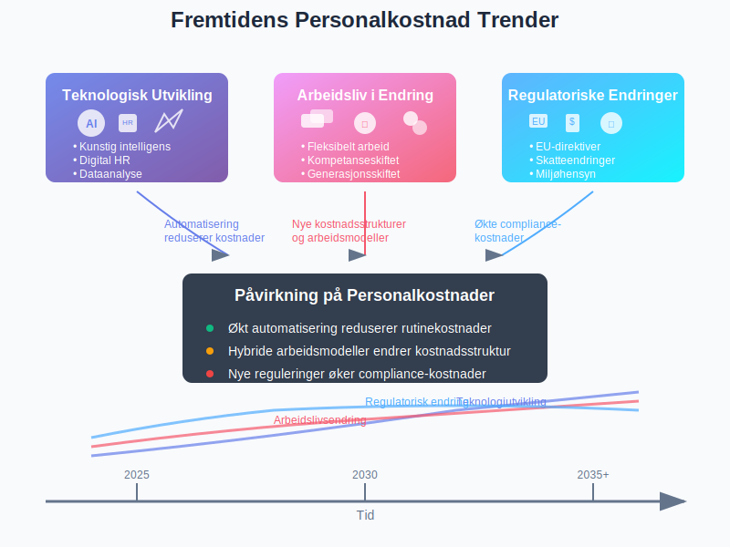
Praktiske Tips for Personalkostnadsstyring
For bedrifter som ønsker å optimalisere personalkostnadstyringen:
Systemvalg
- Integrerte løsninger: Lønn, HR og økonomi i samme system
- Skybaserte tjenester: Reduserte IT-kostnader
- Mobile løsninger: Fleksibilitet for ansatte og ledere
Organisering
- Tydelige rutiner: Dokumenterte prosesser for lønnskjøring
- Rolleavklaring: Klar ansvarsfordeling
- Kontinuerlig opplæring: Oppdatert kompetanse på regelverk
Oppfølging
- Regelmessig analyse: Månedlig gjennomgang av tall
- Benchmarking: Sammenligning med bransje og konkurrenter
- Prognoseoppdateringer: Løpende revideringer av budsjett
Personalkostnad er et komplekst område som krever både regnskapsmessig, juridisk og strategisk kompetanse. Ved å etablere gode rutiner for regnskapsføring, kontroll og analyse kan bedrifter både sikre compliance og optimalisere kostnadsnivået for økt lønnsomhet.